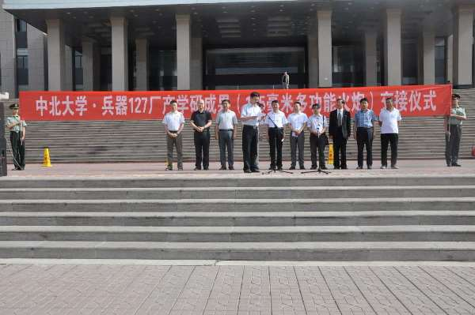
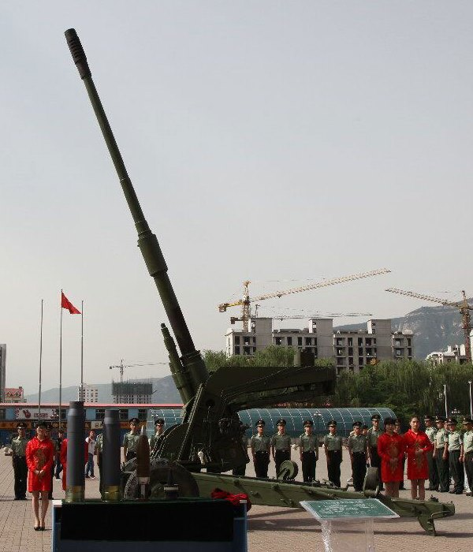

【陆军】共军的超级大炮
2015-07-06 10:14:00
原文网址：https://blog.udn.com/MengyuanWang/108908750
2015年六月10日，位于山西太原的中北大学举行了一项交接仪式，接收了来自兵器127厂（亦即同在太原的山西北方机械公司，原名山西机器局，始建于清末）的一门“125毫米多功能火炮”。因为这门火炮样式十分先进，网络上议论纷纷，不久《观察者网》就刊出评论（参见http://www.guancha.cn/military-affairs/2015_06_11_322942_s.shtml），随即美国的《Popular Science》也登出了报导（参见http://www.popsci.com/china-builds-worlds-fastest-tank-gun-then-tries-hide-it），但是两者内容南辕北辙，意见互相衝突，我在此做个比较分析。
交接仪式的主席台。横幅称这门火炮为“產学研成果”。
《观察者网》认为这是一门旧有的线膛式加榴炮，是用来研发PLZ-05和PLZ-52等新式自走炮的早期原理样炮。《Popular Science》则认为这是一门全新的坦克炮，将用来取代99式坦克所用的ZTP-98式125毫米滑膛炮。但是这两个理论都有很大的问题：首先一般的样炮会採用与目标產品相同口径和身管长，以确保内外弹道的相似性；可是这门火炮口径是125毫米，身管长是60倍径（即125x60=7500毫米），PLZ-05和PLZ-52却都是155毫米口径、身管长52倍径（即155x52=8060毫米）的火炮。然而如果如美国人所猜测，这是一门坦克炮，那么它就应该是滑膛的（坦克炮首重穿甲能力，所以初速越高越好，而滑膛炮的阻力小、初速高，自1960年代苏联率先採用之后，全世界的新坦克炮都是滑膛的），而且主要发射APFSDS弹药（Armor-Piercing Fin-Stablized Discarding-Sabot，即次口径的飞镖弹）。不过APFSDS对炮口制退器（Muzzle Supressor）非常敏感，所以现代的坦克炮都没有装炮口制退器；这门火炮却装了一个庞大的炮口制退器，看来是德国PzH-2000型自走炮的山寨版。
交接仪式中，从主席台向外看的照片。请注意庞大的炮口制退器，是PzH-2000的翻版，共军自用和外销的多种火炮都没有使用这型炮口制退器的记录。炮管中段的突起是抽烟器，代表着这款火炮是为装甲车设计的，不是真正的牵引式火炮。照片中的牵引架是共军66式加榴炮的现成炮架，显然是样炮测试期间将就搭配用的。液压高低机连接到炮架上后方，液压制退管在炮管下方，都是典型的自走炮设计。仰角可以高达80度左右，跟坦克炮完全不同。 这是配套弹药的近照。请注意它们是一体式弹药，而共军所有现役的125毫米坦克炮和155毫米自走炮都使用两段分装式的弹药。最左边的弹头就是APFSDS，但是飞镖的长径比还不到10，而现代所有坦克炮所用的APFSDS长径比都在25到50之间；反过来说，如果这是自走炮，就完全不会需要APFSDS。所以这是一件很难解释的怪事。
这是配套弹药的近照。请注意它们是一体式弹药，而共军所有现役的125毫米坦克炮和155毫米自走炮都使用两段分装式的弹药。最左边的弹头就是APFSDS，但是飞镖的长径比还不到10，而现代所有坦克炮所用的APFSDS长径比都在25到50之间；反过来说，如果这是自走炮，就完全不会需要APFSDS。所以这是一件很难解释的怪事。
《观察者网》无法解释现场的APFSDS弹药，也不能解释为什么装药是一体式，更不能解释“多功能”是什么意思，所以只猜测弹药是随便拿来而拿错的。奇怪的是共军并没有现成的一体式125毫米弹药，所以127厂从哪里拿错来着是个无解的谜题。《Popular Science》错得更离谱，把液压高低机和液压制退器都搞反了，显然作者是完全不入流的门外汉。这个APFSDS弹头的长径比如此之低，其穿甲能力必然远低于ZTP-98所发射的弹头，要替换后者真不知从何说起。而且对共军的保密传统稍有常识的人都应该知道，这门火炮若不是彻底过时，是不可能如此高规格地公开做交接仪式的。
这是一个很有意思的谜题，我仔细想了几天，才得到一个面面俱到的答案。请注意，127厂是北方机械公司，属于中国兵器工业第一机械集团，而PLZ-05和PLZ-52的制造商是北方工业公司（Norinco，中国最大的装甲车辆和火炮制造商），那要比北方机械大多了。所以这门炮的确是一门旧式的线膛炮，但是应该是北方机械公司内部的实验品，和北方工业公司的PLZ-05和PLZ-52一点关系都没有。因为是实验品而不是原理样炮，所以可以什么都尝试，包括共军自动装弹机还不能处理的一体式弹药。虽然它主要是为自走炮设计的，但是有人在实验期间突发奇想，做了一个简单的APFSDS来试试看（其实一体式弹药的最大优点就在于可以容纳长径比高达50的APFSDS，可是反正线膛和炮口制退器已经保证它不适合做专业的坦克炮，就只是试着玩儿），于是这门火炮就成了“多功能”的。这门火炮的制造年份也可以估计得出来。PzH-2000是1996年定型的，所以中北大学的设计团队应该是在1996年之后才山寨了它的炮口制退器。Norinco是自1990年代后期开始应共军的要求而研发PLZ-05，所以127厂有可能也是为了投标同一时期的装备需求而和中北大学合作的。总之这门火炮大约已经是15年旧了。共军最后显然对这型新口径（现役火炮是122毫米口径的）、新弹药的自走炮一点兴趣都没有，所以127厂实验做完后，摆了几年，干脆把它送还给中北大学做纪念。
以上是我的猜测，读者认为还合理吗？
【后注】从一份读者给的新闻稿来判断，似乎我猜错了一个细节：这门炮是2011才立项的，现在计划还在进行中。那么这个交接就可能是反过来由中北大学正式交货给127厂。那位读者认为军方是交接对象，我觉得可能性很小。首先没有军官在主席台上；其次一个还在进行中的研究计划，共军是不会公开举行仪式的。
如果这门火炮真是在2011年才立项，各种实验或许还未结束。不过它在技术方面四不像的特徵，仍然说明这是一个纯粹的早期实验品，没有直接实用化的可能。例如它虽是“多功能”的，但是主要是一门自走炮，所以採用一体式弹药没有好处（只有坦克炮的一体式弹药可以配套长径比更高的APFSDS，所以性能优于分段式弹药），徒然造成装弹的困难。共军至今仍未开发出PzH-2000所用的那类自动装弹机，部分原因是它占的空间更大，没有性能优势就不值得。